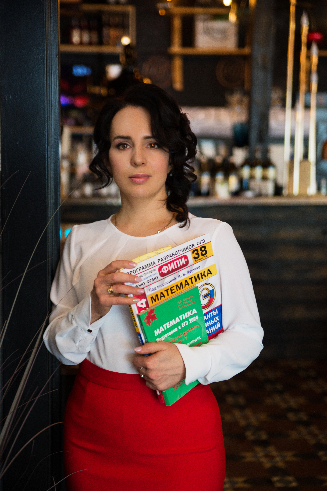
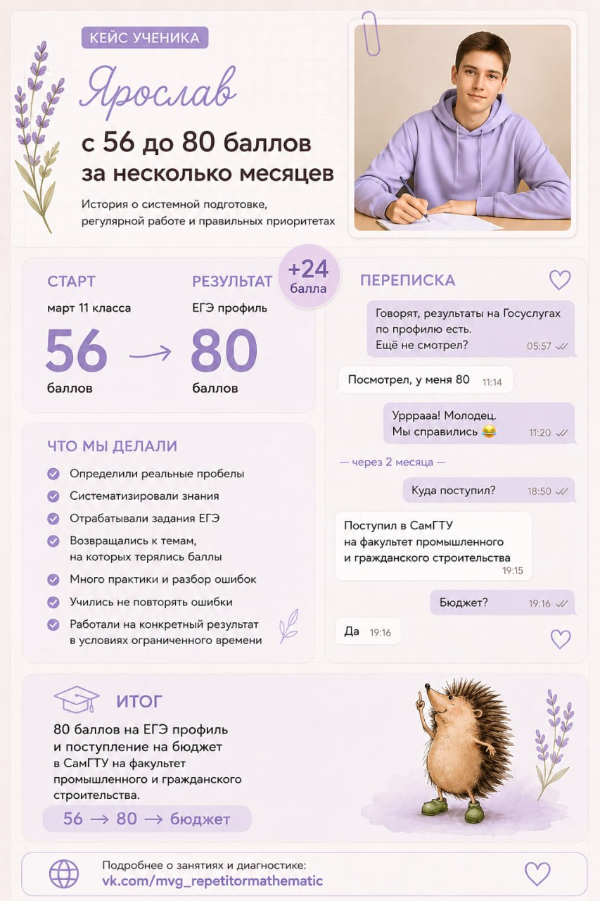
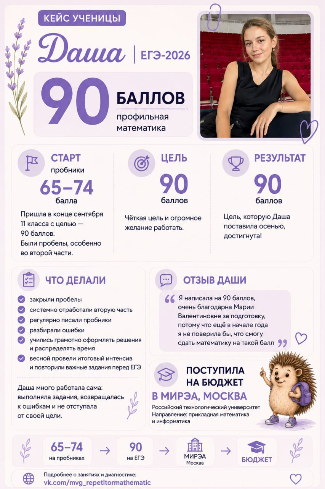
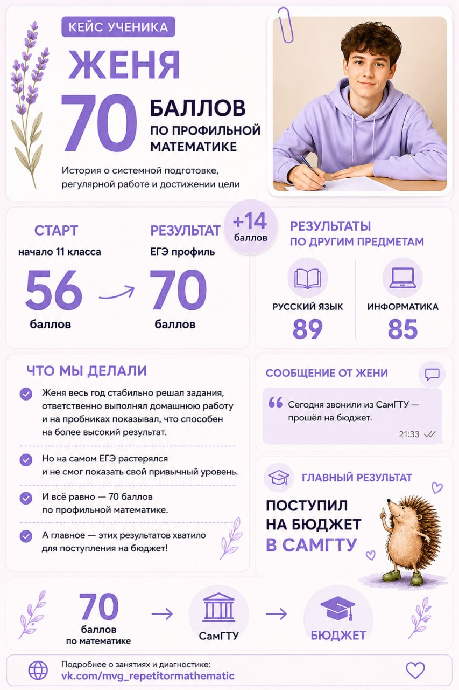
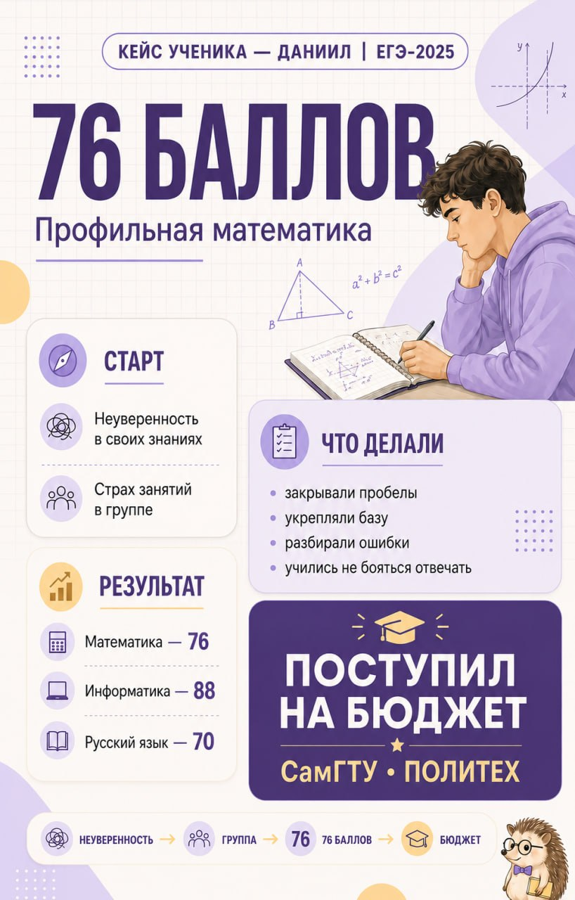

ЕГЭ65+
Уверенная первая часть
Для 11 класса: восстановить базу за 8-10 класс, закрыть пробелы и уверенно решать задания первой части.
- 36 недель подготовки
- 2 раза в неделю по 90 минут
- 3-6 человек в группе
Онлайн-подготовка к экзаменам по математике
Губарева Мария Валентиновна, частный профессиональный репетитор с опытом более 20 лет. Работаю с учениками 7-11 классов, готовлю к профильному ЕГЭ, ОГЭ и закрываю пробелы в базе.

Определяем стартовый уровень, реальные пробелы и подходящий формат подготовки.
Рабочие листы, алгоритмы, домашние задания с проверкой, зачеты и пробники.
Ученик видит динамику, учится распределять время и подходит к экзамену со стратегией.
Программы
В основе каждого курса: мини-группы, регулярные пробники, разбор ошибок, поддержка в чате и авторские материалы для отработки тем.
Для 11 класса: восстановить базу за 8-10 класс, закрыть пробелы и уверенно решать задания первой части.
Для тех, кто хочет уверенно решать первую часть и освоить доступные задания второй части для результата 75+.
Углубленная подготовка для учеников, готовых работать со сложными заданиями второй части.
Для 9 класса: алгебра и геометрия, системная подготовка ко всему экзамену, регулярные пробники.
Доказательства
Подготовка строится вокруг конкретной цели: диагностика, план, регулярные контрольные точки и работа над ошибками после каждого зачета или пробника.
О преподавателе
Я окончила Тольяттинский государственный университет по специальности "Математика" в 2002 году. Работала учителем математики в школах с углубленным изучением предметов N10 г. Тольятти и в школе N18.
Сегодня провожу индивидуальные занятия и мини-группы онлайн, помогаю школьникам из разных городов готовиться к ЕГЭ и ОГЭ, устранять пробелы и развивать уверенность.
Кейсы и отзывы
Реальные кейсы и отзывы сохранены изображениями, на телефоне блок листается горизонтально.




Точечная помощь
6 онлайн-встреч, 6 встреч в мессенджере, теория в записи и 12 тематических работ.
7900 ₽ за курс9 часов онлайн-занятий, домашняя практика с проверкой и сопровождение в мессенджере.
с нуля до заданий ЕГЭСистемная отработка базы, типовых приемов и выбора способа решения.
для профильного ЕГЭСвязь
Консультации: вторник и четверг, 10:00-16:00 мск. Удобнее писать в Telegram или ВКонтакте.